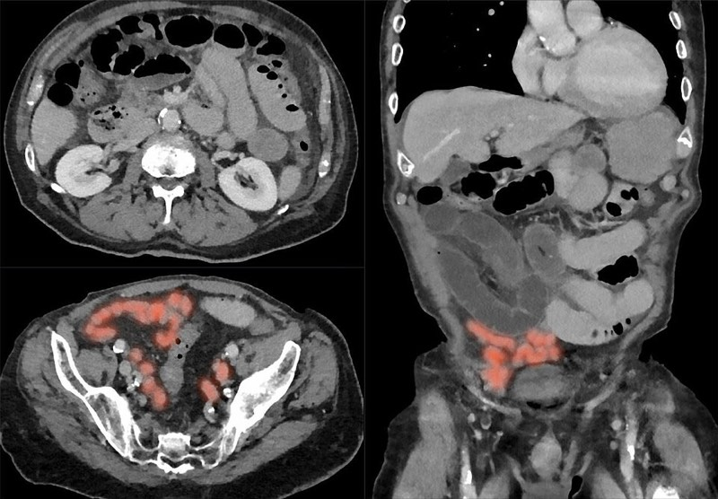
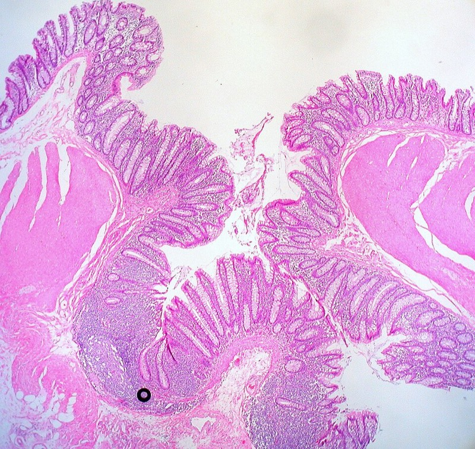

急性腹症與腸阻塞（闌尾炎、腸扭轉、腸繫膜缺血、疝氣、憩室炎）
二階醫學五的最大得分區；命題核心是「什麼時候要開刀、什麼時候還能等」
近五年 55 題（一階 10／二階 45）
闌尾腔阻塞
糞石 淋巴增生 腫瘤
黏液持續分泌 管腔壓上升
內臟傳入神經受刺激
肚臍周圍模糊痛 + 噁心
靜脈與淋巴回流受阻 細菌增生
漿膜層發炎波及壁層腹膜
右下腹定位痛 McBurney 點壓痛
反彈痛 肌衛
動脈血流受阻 → 壞死
穿孔
大網膜能否包住
局部膿瘍 或 蜂窩組織炎
瀰漫性腹膜炎
三條結腸帶（taeniae coli）匯聚點
三條結腸帶在闌尾根部匯合
→ 二階：手術中循結腸帶找闌尾（114-1 醫學一 Q19）
闌尾位置變異
後盲腸位最常見，其次骨盆位、盲腸下位
→ 二階：解釋非典型表現（後盲腸位可無明顯壓痛）
內臟傳入與轉移痛節段
前腸 T5–9（上腹）、中腸 T10（臍周）、後腸 T11–L1（下腹）
→ 二階：腹痛定位的推理基礎
SMA 分支
下胰十二指腸、空腸迴腸動脈、中結腸、右結腸、迴結腸動脈
→ 二階：缺血範圍推理（SMA 供應到橫結腸右三分之二）
分水嶺區
脾曲（Griffith）、直腸乙狀結腸交界（Sudeck）
→ 二階：缺血性大腸炎好發位置
大腸特徵
結腸帶、結腸袋、腸脂垂；無絨毛
→ 二階：「下列何者不是大腸特徵」（112-2 醫學一 Q19）
Brunner 腺
十二指腸黏膜下層的鹼性黏液腺
→ 二階：「黏膜層與黏膜下層皆有腺體者」＝十二指腸（114-1 醫學一 Q44）
腹膜後器官
十二指腸大部、胰臟、升降結腸、腎、腎上腺、主動脈、下腔靜脈
→ 二階：後腹膜出血與胰臟炎的痛法
中腸旋轉
胚胎期逆時針旋轉 270°
→ 二階：腸旋轉不良與中腸扭轉
內臟傳入神經節段（中腸 T10）
機轉：臍周模糊痛
二階：闌尾炎初期表現
決策：早期不會有壓痛點
壁層腹膜由體神經支配
機轉：定位明確
二階：McBurney 點壓痛、反彈痛
決策：腹膜刺激＝手術評估
三條結腸帶匯於闌尾根部
機轉：解剖標記
二階：術中尋找闌尾
決策：縮短手術時間
SMA 供應範圍至橫結腸右 2/3
機轉：分水嶺區血流最弱
二階：缺血性大腸炎好發脾曲
決策：內視鏡取樣位置
大腸憩室由 vasa recta 穿透處疝出
機轉：血管被拉扯
二階：憩室出血無痛且量大
決策：下消化道出血鑑別
中腸旋轉 270°
機轉：旋轉不良
二階：新生兒中腸扭轉
決策：膽汁性嘔吐＝緊急手術
Meckel 憩室為卵黃管殘餘
機轉：含異位胃黏膜
二階：兒童無痛血便
決策：⁹⁹ᵐTc 掃描
鴉片受體在腸神經系統
機轉：抑制蠕動
二階：術後腸阻塞
決策：alvimopan 不過血腦障壁
乙醯膽鹼酯酶抑制促進副交感
機轉：促進結腸蠕動
二階：Ogilvie 症候群
決策：neostigmine 治療
臨床表現與理學檢查
非膽汁性：阻塞在 Vater 壺腹近端（幽門狹窄、十二指腸第一部阻塞）。
膽汁性：阻塞在壺腹遠端；新生兒膽汁性嘔吐 ＝ 外科急症（先排除中腸扭轉）。
糞臭味嘔吐：遠端小腸或大腸阻塞。
急性腹痛
生命徵象 + 腹膜刺激徵象
復甦 + 緊急手術評估
病史 定位 hCG 血液檢查
影像：CT 為主 小兒與孕婦優先超音波
診斷
抗生素 + 闌尾切除
膿瘍成形者可先引流
有無絞窄徵象
內視鏡減壓 後續擇期切除
有壞死或腹膜炎則手術
手術
CTA 確診 立即血管重建或切除
Hinchey 分級
緊急手術
禁食 鼻胃管減壓 輸液
水溶性顯影劑可診斷兼治療
觀察 24-48 小時
抗生素 ± 經皮引流
緊急手術
急性闌尾炎
痛從臍周轉移、發燒、白血球上升
轉移痛是最有力的病史
卵巢囊腫扭轉／破裂
突發、與月經週期相關、超音波見附件腫塊
育齡女性先驗 hCG 加婦科超音波
子宮外孕
hCG 陽性、休克
漏掉會出人命
骨盆腔發炎
子宮頸舉痛、雙側
雙側痛較不像闌尾炎
腸繫膜淋巴腺炎
兒童、上呼吸道感染後
兒童常見的闌尾炎模仿者
克隆氏症迴腸炎
慢性腹瀉、體重減輕
手術中看到闌尾正常要檢查末端迴腸
Meckel 憩室炎
兒童、與闌尾炎難分
術中闌尾正常要往迴腸找
右側輸尿管結石
絞痛放射至腹股溝、血尿
痛到打滾而非不敢動
11.1 闌尾炎
標準治療：闌尾切除術；腹腔鏡與開放式相比，傷口感染較少、恢復較快、
延遲就醫、已穿孔者：術後最常見併發症是傷口感染與腹腔內膿瘍（111-2 醫學五 Q77）。
已形成局限性膿瘍（phlegmon／abscess）：可先抗生素＋經皮引流，
單純性闌尾炎「純抗生素治療」是可行選項但復發率較高，屬於近年新增的討論點。
孕婦：闌尾炎仍是最常見的非產科手術原因；腹腔鏡在各孕期已可安全施行，
11.2 腸阻塞
基本三件事：禁食、鼻胃管減壓、輸液與電解質矯正。
水溶性顯影劑（如 gastrografin）：兼具診斷與治療效果，
手術指徵：絞窄徵象、閉環阻塞、腹膜炎、保守治療失敗、
絕不要忘記檢查疝氣孔 — 這是最常被漏掉的可矯正病因。
11.3 功能性阻塞
11.4 腸繫膜缺血
時間就是腸子：及早 CTA、抗凝、血管內或外科血管重建、
NOMI 的關鍵是矯正低灌流狀態並停用血管收縮劑。
11.5 憩室炎
單純性（Hinchey I）：門診或住院抗生素；近年對低風險單純性憩室炎可不用抗生素有實證，
膿瘍 >3–4 cm：經皮引流。
化膿性或糞性腹膜炎（Hinchey III/IV）：緊急手術（Hartmann 或一期切除吻合）。
急性期不做大腸鏡（穿孔風險），緩解 6–8 週後補做以排除癌症。
11.6 腹內感染的抗生素療程
達成感染源控制（source control）後，約 4 天的抗生素即足夠， 延長療程並不改善結果（113-2 醫學五 Q5 的方向）。
預後
單純性闌尾炎手術死亡率極低；穿孔者併發症明顯上升。
小腸阻塞非手術成功者仍有較高復發率；沾黏性阻塞是反覆問題。
急性腸繫膜缺血死亡率仍高（可達五成以上），關鍵在診斷延遲。
流行病學
小腸阻塞最常見原因：術後沾黏（約六成以上），其次為疝氣、腫瘤、克隆氏症狹窄。
大腸阻塞最常見原因：大腸癌，其次為乙狀結腸扭轉、憩室狹窄。
闌尾炎終生風險約 7–8%，好發 10–30 歲。
憩室症在西方以左側為主，亞洲人右側憩室比例明顯較高 — 這是台灣考題的本土差異點。
影像判讀重點
Alvarado
用途：闌尾炎臨床機率
族群：疑似闌尾炎
限制：女性與兒童特異性較低
陷阱：誤當確診工具
決策：高分可直接手術，中間分數做影像
AIR score
用途：同上，含 CRP
族群：同上
限制：同上
陷阱：—
決策：分層是否需影像
Hinchey
用途：憩室炎穿孔程度
族群：複雜性憩室炎
限制：需 CT
陷阱：Hinchey I 不必然手術
決策：III/IV 需緊急手術；I/II 可引流加抗生素
WSES 分級
用途：闌尾炎複雜度
族群：闌尾炎
限制：—
陷阱：—
決策：決定抗生素療程與手術方式
Boey score
用途：潰瘍穿孔預後
族群：穿孔
限制：—
陷阱：—
決策：風險分層
闌尾痛的轉移機轉；三條結腸帶找闌尾。
小腸阻塞最常見原因是沾黏；無手術史要想疝氣與腫瘤。
pain out of proportion → 腸繫膜缺血 → CTA。
乙狀結腸扭轉先內視鏡減壓；盲腸扭轉直接手術。
alvimopan 與 neostigmine 各自的適應症。
乳酸正常不能排除早期腸缺血。
腹腔鏡闌尾切除不是每一項都優於開放式。
急性憩室炎期間做大腸鏡。
新生兒膽汁性嘔吐當成餵食問題觀察。
把「腸壁積氣一律代表腸壞死」寫成正確敘述（其實需合併臨床判斷）。
111-1 二階 醫學三 16
轉移性右下腹痛的診療處置
→ 闌尾炎的評估流程
111-1 二階 醫學五 13
腹腔鏡闌尾切除敘述何者錯誤
→ 並非所有指標都優於開放式
111-2 二階 醫學五 77
延遲就醫闌尾炎術後最常見併發症
→ 傷口感染／腹腔內膿瘍
112-1 一階 醫學一 21
闌尾最不可能出現的位置
→ 位置變異範圍
112-2 一階 醫學一 19
何者不是大腸的特徵
→ 大腸無絨毛
112-2 一階 醫學二 68
alvimopan 用於術後腸阻塞
→ 周邊型 μ 受體拮抗劑
112-2 二階 醫學五 50
左下腹痛＋憩室炎病史
→ 憩室炎分級與處置
112-2 二階 醫學五 77
老年男性腹脹無解便、無開刀史
→ 大腸阻塞／乙狀結腸扭轉
113-1 一階 醫學一 20
SMA 的分支
→ 迴結腸、右結腸、中結腸等
113-1 一階 醫學一 21
闌尾疼痛的傳導
→ 內臟傳入神經
113-1 一階 醫學二 68
急性結腸假性阻塞用藥
→ neostigmine
113-1 二階 醫學三 20
急性腸阻塞敘述何者錯誤
→ 病因與處置細節
113-1 二階 醫學五 49
腸套疊敘述
→ 好發年齡、復位方式
113-1 二階 醫學五 53
腹腔鏡 vs 開放闌尾切除
→ 各自優缺點
113-2 二階 醫學三 18
急性腸阻塞敘述何者錯誤
→ 同上
113-2 二階 醫學五 5
腹內感染抗生素使用期間
→ 感染源控制後約 4 天
113-2 二階 醫學五 50
大腸腸扭轉
→ 乙狀結腸與盲腸處置不同
114-1 一階 醫學一 19
手術中如何快速找到闌尾
→ 循三條結腸帶匯聚點
114-1 一階 醫學一 44
黏膜層與黏膜下層皆有黏液腺者
→ 十二指腸（Brunner 腺）
114-1 二階 醫學五 32
急性闌尾炎敘述何者錯誤
→ 診斷與處置細節
114-1 二階 醫學五 46
經腸繫膜缺損突出的疝氣
→ 內疝（transmesenteric）
114-1 二階 醫學五 72
療養院老人腹脹 X 光與鋇劑
→ 乙狀結腸扭轉
114-2 二階 醫學五 76
腸阻塞病人到急診的處置
→ 減壓、輸液、評估絞窄
115-1 一階 醫學一 44
消化道組織結構
→ 各段黏膜差異
115-1 二階 醫學三 23
急性腸繫膜缺血敘述
→ 痛與理學不成比例、CTA
115-1 二階 醫學五 16
大腸憩室炎敘述何者正確
→ 分級與治療
115-1 二階 醫學五 49
兒童無痛血便疑 Meckel
→ ⁹⁹ᵐTc 掃描
115-2 二階 醫學五 15
腸壁積氣的意義
→ 良性與凶險並存，需臨床判讀
115-2 二階 醫學五 17
術後腸阻塞敘述何者錯誤
→ 處置原則

沾黏性小腸阻塞 CT（軸位＋冠狀，著色處為塌陷的遠端腸段）：找到移行點是判讀關鍵，遠端腸段塌陷代表完全阻塞

CC BY-SA 4.0／Hellerhoff


大腸憩室組織學：黏膜與黏膜下層由肌肉層薄弱處疝出 —— 這證明它是假性憩室，也解釋為何被牽拉的 vasa rec

CC BY 2.0／Ed Uthman from Houston, TX, USA

單純性闌尾炎的抗生素治療
CODA 等試驗顯示可行但一年內約三成需手術；有糞石者失敗率高
「手術 vs 抗生素」的條件式答案
單純性憩室炎免抗生素
多國指引已允許低風險族群僅支持療法
舊教科書與新指引衝突處
水溶性顯影劑於小腸阻塞
診斷兼治療的角色更明確
保守治療流程的標準步驟
腸繫膜缺血的血管內治療
導管取栓與溶栓應用增加
「立即開腹」不再是唯一答案
ERAS 與術後腸阻塞
多模式止痛、早期進食、限制鴉片
從藥物治療走向流程管理
孕期腹腔鏡
各孕期安全性證據累積
舊觀念「孕婦不做腹腔鏡」已被推翻
AI 輔助 CT 判讀
闌尾炎與腸阻塞偵測
趨勢題材
進場
誰會來、誰是高風險
分流
穩不穩、有沒有警訊
一線資料
先開哪些檢驗與影像
鑑別
可能是什麼、怎麼分
確診
什麼證據才算數
分級
多嚴重、哪一期
處置
依分級做什麼
追蹤預後
之後追什麼